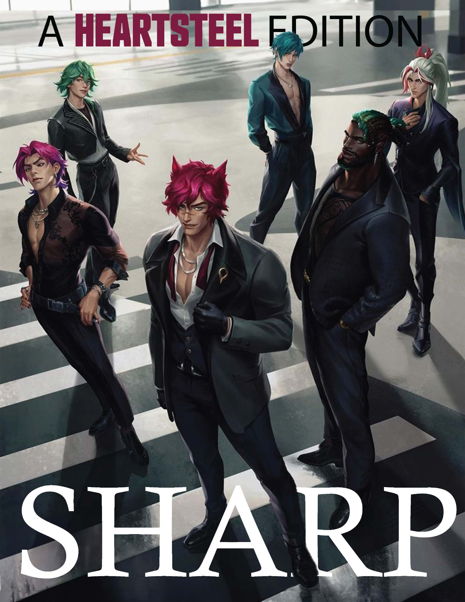

04 / Editorial layout concept
HEARTSTEEL
A magazine layout concept using existing HEARTSTEEL imagery. My contribution is page composition and typography across a cover and four interior pages.
- Project
- Magazine layout concept
- My role
- Editorial layout and typography
- Scope
- Cover and four interior pages
01 / The magazine
A cover and four interior pages.
Turn the pages with the arrows, a swipe, or the page itself. Use Enlarge to inspect the artwork.

Cover · 1 of 5
The article page contains intentional sample text. This is a layout study, rather than a published or fully written magazine.
Editorial layout and typography by Katherine Li. Existing HEARTSTEEL character imagery, related artwork, and song lyrics belong to their respective rights holders.
02 / Layout decisions
Change the pace from page to page.
The cover uses a large masthead and a compact edition line. Inside, a six-image portrait grid introduces the characters before a three-column article changes the density. The final two pages use a darker text panel and a continuous desk image to connect the spread.
Existing character imagery provides the subject and visual tone; I arranged it within the editorial layouts.